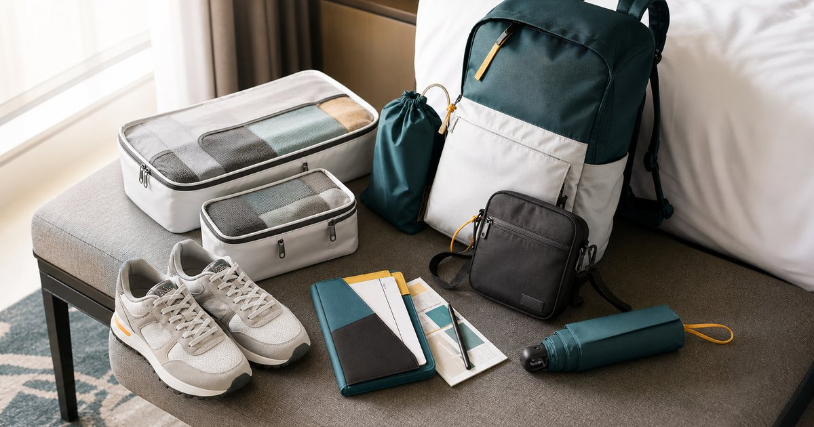

Elite Fashion｜旅行鞋包配置：好走鞋、輕量包、貼身小包與雨天備案
旅行鞋包配置不是把所有包都帶上。先分移動日、城市日、雨天備案與晚餐場合，鞋和包才會真正減少負擔。

先分移動日、城市日、雨天日、晚餐日
旅行鞋包配置要先按天分任務。移動日重視輕和安全感，城市日重視好走，雨天日重視備案，晚餐日重視場合。
可以把 UD LAB、S′AIME、鞋掌櫃、95 SNEAKER、Heine 與 FULTON 放在同一個場合裡比較，但不要只看外型。編輯部會先看版型、重量、材質、收納、是否能和既有衣物搭配，以及它在上班、旅行或週末之間能不能轉換。
比較穩妥的順序是先確認 行程中哪幾天需要長時間移動、哪幾天需要較正式。常見失誤是 每個場合都帶一套鞋包，行李很快超重；在 三天城市旅行、商務旅行與週末快閃 裡，能被反覆穿用、容易保養、場合感清楚的品項，比一次買很多更實際。
- 先安排主要鞋包，再補備案。
- 每個包都要有明確使用日。
好走鞋先看地面和步數
旅行鞋款不只看好不好搭，也要看城市地面、步數、是否會下雨和是否需要進正式場合。
可以把 95 SNEAKER、鞋掌櫃、FULTON 與 UD LAB 放在同一個場合裡比較，但不要只看外型。編輯部會先看版型、重量、材質、收納、是否能和既有衣物搭配，以及它在上班、旅行或週末之間能不能轉換。
比較穩妥的順序是先確認 每天步數、路面材質、鞋底和清潔難度。常見失誤是 帶了漂亮但不好走的鞋，第二天就想換；在 城市散步、展覽、機場移動與飯店周邊 裡，能被反覆穿用、容易保養、場合感清楚的品項，比一次買很多更實際。
- 主力鞋應該能應付最多步數。
- 備用鞋要輕，不要比主力鞋更麻煩。
輕量包要看背負時間，不只看容量
旅行包不是越大越好。背一整天時，肩帶、重量、開口、安全感和拿取便利性都很重要。
可以把 UD LAB、Heine、S′AIME 與 KANGOL 放在同一個場合裡比較，但不要只看外型。編輯部會先看版型、重量、材質、收納、是否能和既有衣物搭配，以及它在上班、旅行或週末之間能不能轉換。
比較穩妥的順序是先確認 每天背多久、是否放水瓶、是否放相機或外套。常見失誤是 包很能裝，卻讓整天肩膀疲累；在 機場、城市步行、博物館與購物日 裡，能被反覆穿用、容易保養、場合感清楚的品項，比一次買很多更實際。
- 日用包不要裝滿才剛好。
- 肩帶舒適度比容量更常影響心情。
貼身小包處理證件與卡片
貼身小包適合放護照、卡片、手機和少量現金，但不應放成所有物品的中心。它的任務是快速拿取和分散風險。
可以把 S′AIME、UD LAB、KANGOL 與 Mister 手作皮件 放在同一個場合裡比較，但不要只看外型。編輯部會先看版型、重量、材質、收納、是否能和既有衣物搭配，以及它在上班、旅行或週末之間能不能轉換。
比較穩妥的順序是先確認 證件是否需要常拿、包款是否貼身。常見失誤是 把所有東西都塞進貼身小包，反而拿取困難；在 機場、車站、夜市與人多街區 裡，能被反覆穿用、容易保養、場合感清楚的品項，比一次買很多更實際。
- 證件和備用卡可分開放。
- 小包開口要能單手操作但不鬆散。
雨天備案要輕，不要再加一整套
旅行雨天備案不應讓行李膨脹。折疊傘、輕量外層、鞋套或易擦材質包款，比完整雨具更適合多數城市旅行。
可以把 FULTON、OMBRA、UD LAB、Heine 與 S′AIME 放在同一個場合裡比較，但不要只看外型。編輯部會先看版型、重量、材質、收納、是否能和既有衣物搭配，以及它在上班、旅行或週末之間能不能轉換。
比較穩妥的順序是先確認 目的地雨季、是否長時間戶外、包款是否好擦。常見失誤是 為了可能下雨帶太多雨具，最後每天都在搬重量；在 春夏城市旅行、展會行程與週末小旅行 裡，能被反覆穿用、容易保養、場合感清楚的品項，比一次買很多更實際。
- 雨天備案以輕量為主。
- 包款材質要能快速擦乾。
旅行鞋包的成熟配置：一主鞋、一備鞋、一日用包、一小包
多數短旅行不需要更多鞋包。一雙主力好走鞋、一雙輕量備鞋、一個日用包、一個貼身小包，就能涵蓋大部分行程。
可以把 UD LAB、S′AIME、鞋掌櫃、95 SNEAKER、Heine 與 FULTON 放在同一個場合裡比較，但不要只看外型。編輯部會先看版型、重量、材質、收納、是否能和既有衣物搭配，以及它在上班、旅行或週末之間能不能轉換。
比較穩妥的順序是先確認 行程是否真的需要第二個正式包或第三雙鞋。常見失誤是 為了每套衣服配鞋包，最後每天都在整理行李；在 短旅行、商務加休閒與城市自由行 裡，能被反覆穿用、容易保養、場合感清楚的品項，比一次買很多更實際。
- 每件鞋包都要有兩個以上使用場景。
- 最後一天回程要留出收納濕物或髒鞋的位置。
FAQ
短旅行要帶幾雙鞋？
多數情況一雙主力好走鞋加一雙輕量備鞋就夠，除非有明確正式場合或特殊活動。
旅行日用包要多大？
以一天必需品為準，不要裝滿才剛好。水瓶、外套、行動電源和證件都要有固定位置。
雨天備案要帶完整雨具嗎？
視目的地和行程而定。城市旅行通常可先準備輕量雨傘、可擦材質包款和簡單外層。
下一步建議
如果你正在整理下一趟旅行鞋包，可以先從一雙主力鞋、一個日用包和一個貼身小包開始。
重要警語
本文為一般旅行鞋包、包款收納與雨天備案情境整理，不構成安全判斷或個別產品測試。鞋包與雨具請依行程、天候、商品標示與個人需求選擇。
本文含品牌／商品導購連結；若你透過部分商品連結前往選購，Elite Fashion 可能取得合作收益。本文仍以編輯判斷與使用情境整理為主，價格、規格、活動與庫存請以商品頁公告為準。